El acuerdo sobre el código de conducta para las multinacionales que negociaban 33 delegaciones en la Conferencia ministerial de la OCDE en París fue firmado hoy , Martes , tras lograr un compromiso para retirar el veto que imponía México.
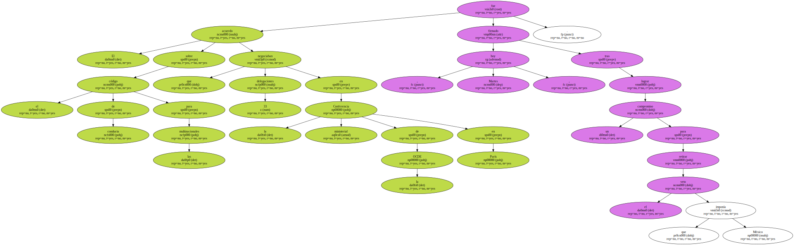En un comunicado , la Organización para la Cooperación y el Desarrollo Económico ( OCDE ) anunció que " la premisa básica de las directrices es que los principios acordados internacionalmente pueden ayudar a prevenir conflictos y a construir una atmósfera de confianza entre las compañías multinacionales y las sociedades en las que operan ".
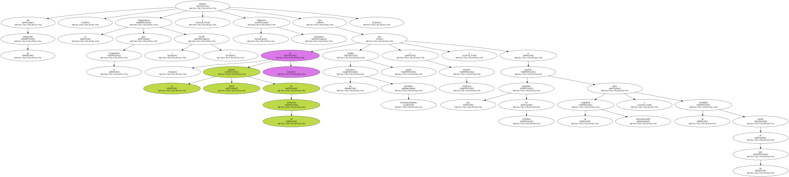La ministra mexicana de Asuntos Exteriores , Rosario Green , se felicitó en rueda de prensa por el compromiso y subrayó que el acuerdo final implica modificaciones que " no son irrelevantes " sobre el texto que estuvo bloqueando hasta primera hora de la mañana.
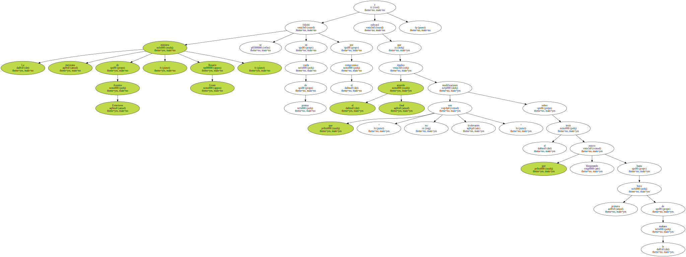El cambio de mayor calado para México hace referencia al anexo del código , en el que se señalaba que los Estados firmantes se comprometían a hacer cumplir todos los puntos del documento de las directrices , más " las materias relacionadas con las directrices ".
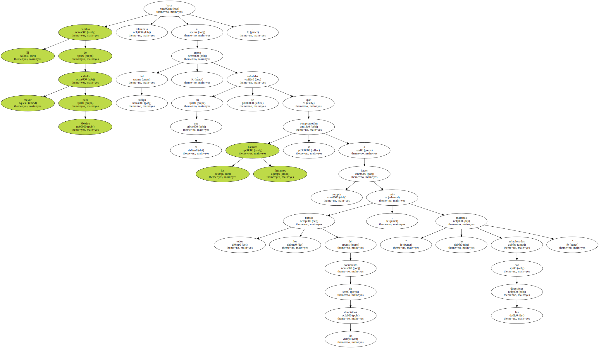México consideraba que esa redacción era muy ambigua y no concretaba qué obligaciones tendría que imponer a las multinacionales que operan en su territorio , por lo que podía ser utilizado , en particular por sindicatos de otros países , para impedir que una empresa se implantara en el país latinoamericano.
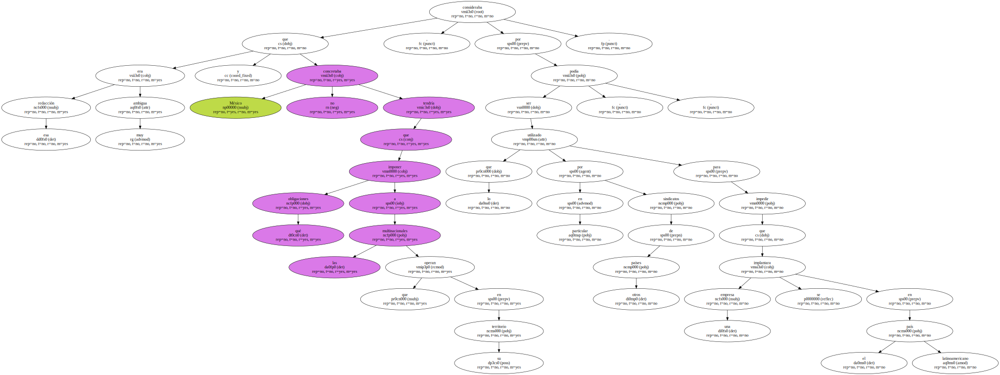En la versión final se afirma que los países se comprometen a que las empresas respeten las " materias cubiertas por las directrices ".
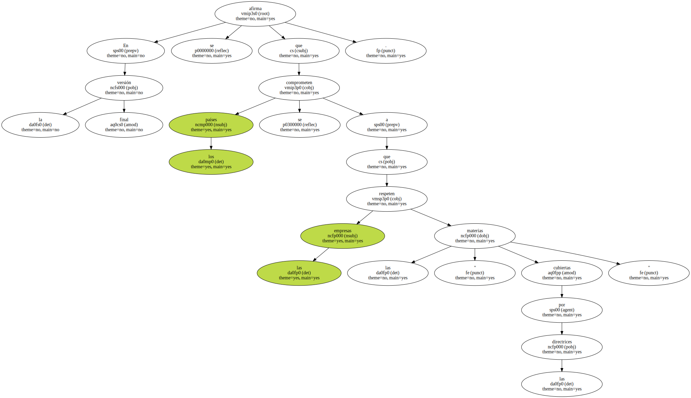Preguntada por EFE sobre la naturaleza de los cambios introducidos en este punto , Green insistió en que no se trata únicamente de un cambio semántico y señaló que con la modificación del texto " se ha especificado " el marco de cobertura del código.
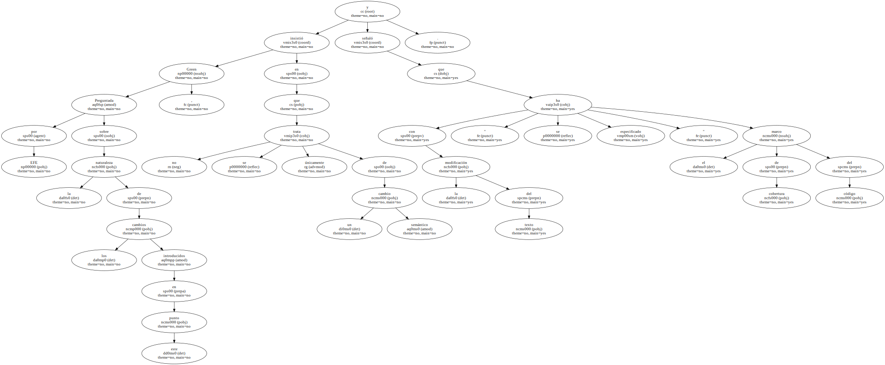Otra de las modificaciones de última hora concierne al mecanismo de control de las obligaciones y el ámbito de arbitraje de las eventuales controversias de las empresas , que será realizado siempre en primer lugar por los llamados Puntos de Contacto Nacionales ( PCN ) y no podrá realizarse desde el exterior , como contemplaba el texto que apoyaban todos los países a excepción de México.
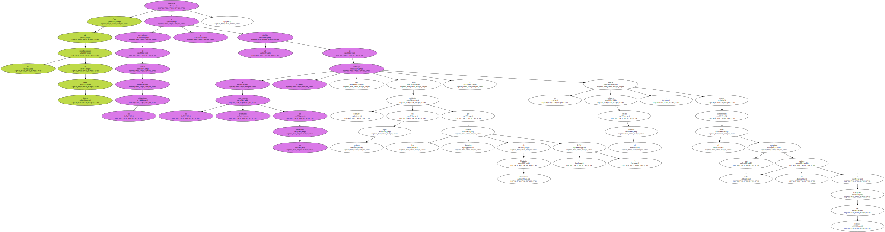El secretario mexicano de Comercio e Industria , Herminio Blanco , advirtió , en declaraciones a la prensa que en su anterior versión las directrices planteaban para su país un peligro , porque podían ser utilizadas por agentes exteriores para desviar las potenciales inversiones dirigidas a México hacia otros países.
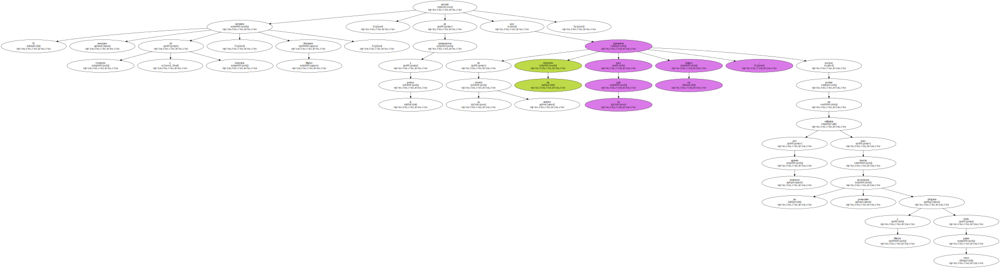En la misma línea , el representante de la patronal mexicana en el Comité Consultivo Económico e Industrial ( BIAC ) , Francisco Garza , se mostró " muy satisfecho por la eliminación de ambigüedades " y estimó que se ha evitado el riesgo de que sindicatos estadounidenses hagan presiones desde su país para impedir que las empresas se instalen en México.
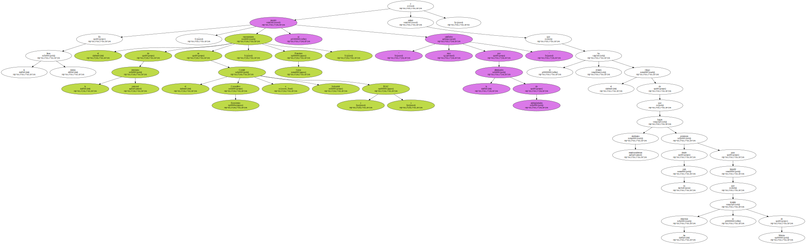Green explicó que el veto que mantenía su país tenía su razón de ser en que " México es uno de los países del mundo más abiertos en términos de inversión y de comercio , y no queremos hacer peligrar esa apertura ".

Comentó que sin las enmiendas de última hora , cabía la posibilidad de que " los estándares laborales y medioambientales fueran utilizados por algunas organizaciones para practicar nuevas formas de neo-proteccionismo ".
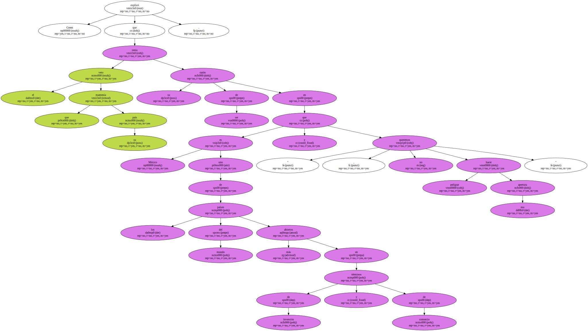" México está en desacuerdo con que las inversiones " puedan escaparse " no por razones laborales o medioambientales , sino por razones de competencia " , argumentó la responsable diplomática , que añadió que eso no significa que su país no está comprometido con el cumplimiento de las reglas laborales o de respeto del medio ambiente.
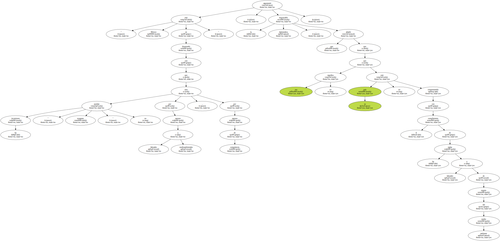La última revisión de las directrices del código - cuya primera versión data de 1976 - comenzó en 1998 y en ella han participado , además de los países de la OCDE , Argentina , Brasil y Chile y Eslovaquia.
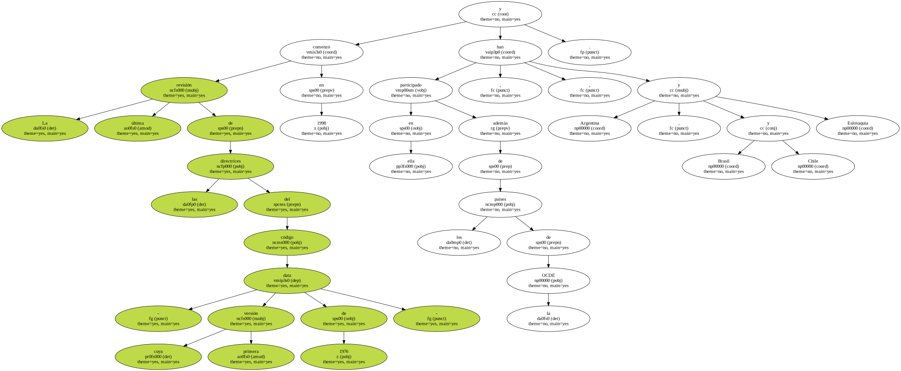El texto establece a nivel multilateral una serie de obligaciones , que no son jurídicamente vinculantes , para todas las compañías multinacionales de los Estados que las han suscrito , principalmente de carácter laboral , medioambiental , de competencia y de ética de negocios.
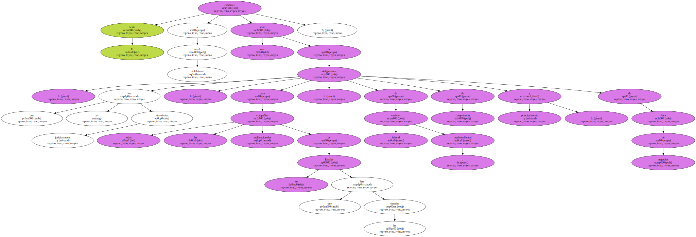En la revisión del texto ahora consensuado se incluyen recomendaciones sobre la supresión del trabajo infantil y del trabajo forzado y se incluyen las normas laborales fundamentales reconocidas por la Organización Internacional del Trabajo ( OIT ).
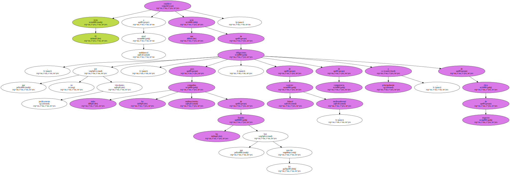También aparece como novedad un reforzamiento del dispositivo de medidas para la protección del medio ambiente , una recomendación sobre derechos humanos y nuevos capítulos sobre la lucha contra la corrupción y la defensa del consumidor.
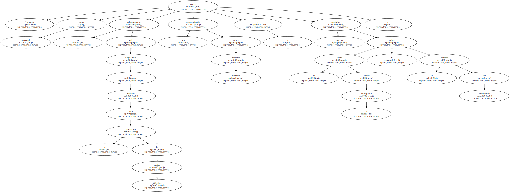Aunque el código de conducta no es jurídicamente vinculante , los Gobiernos de la OCDE se comprometen a promover su respeto.
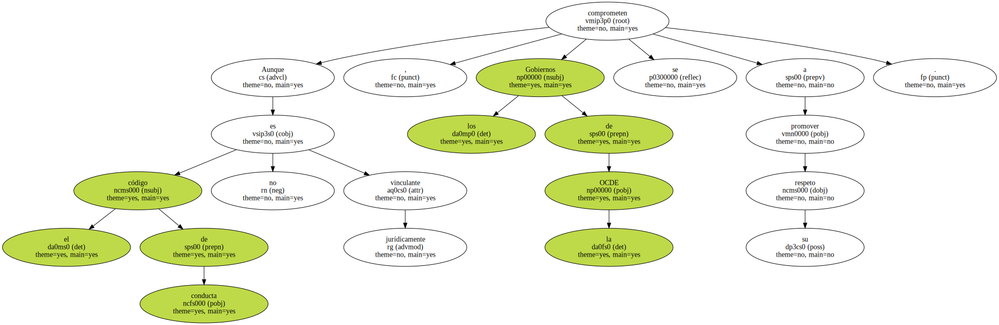